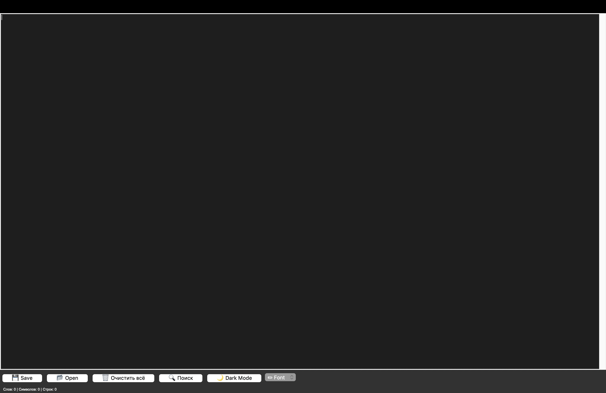
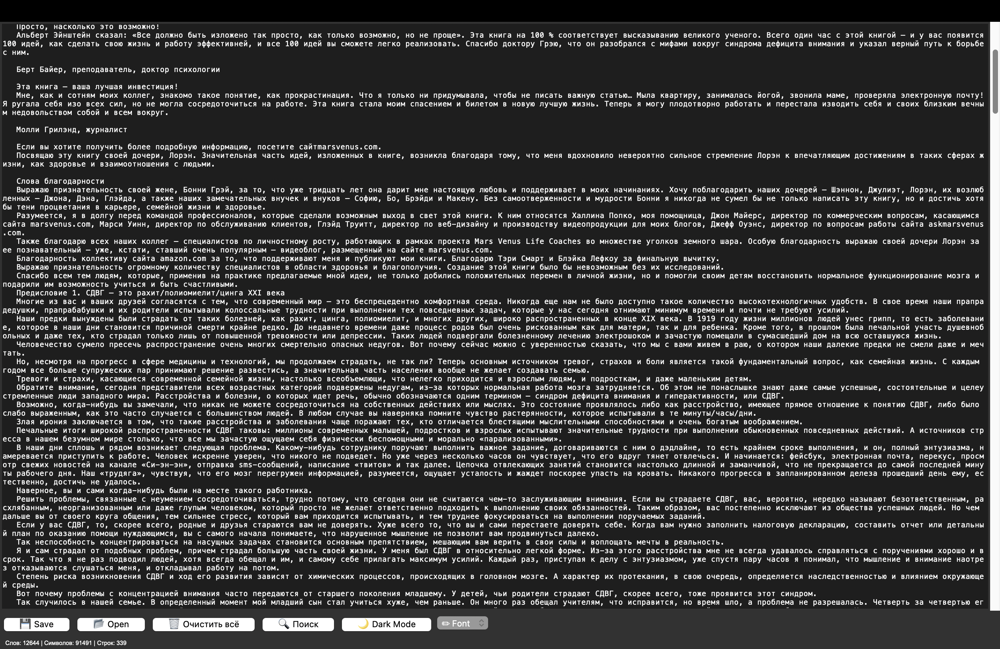
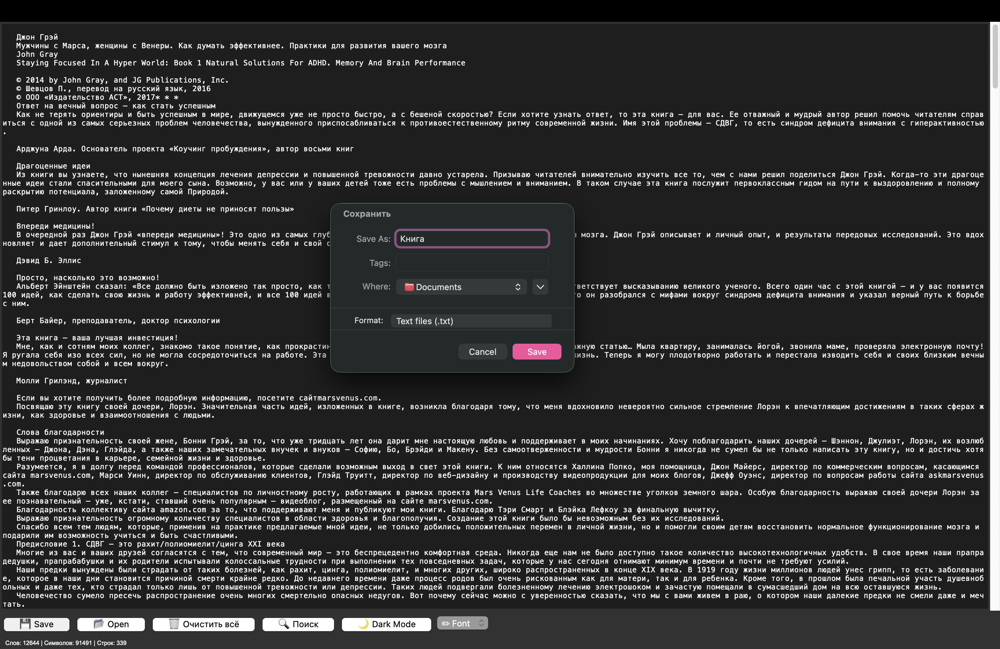
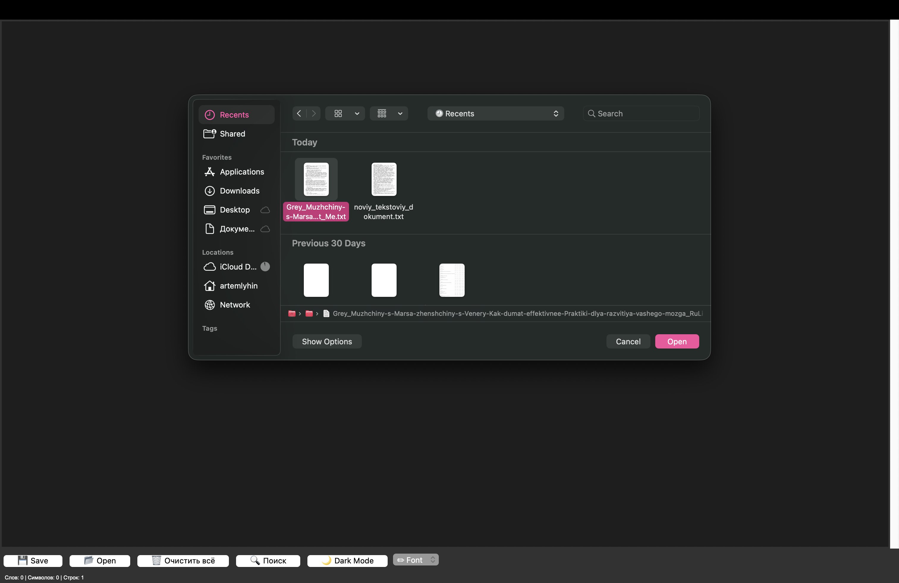
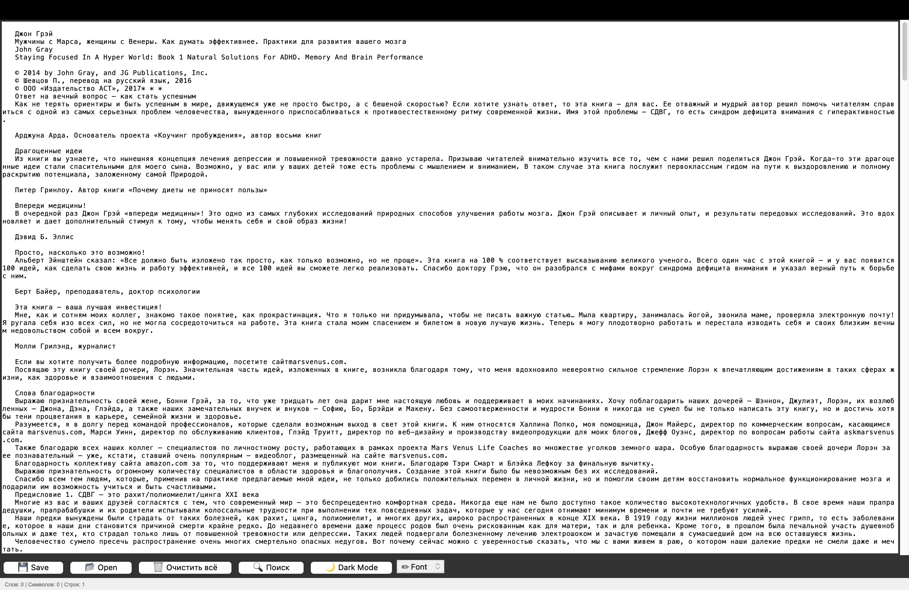
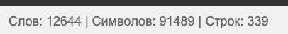
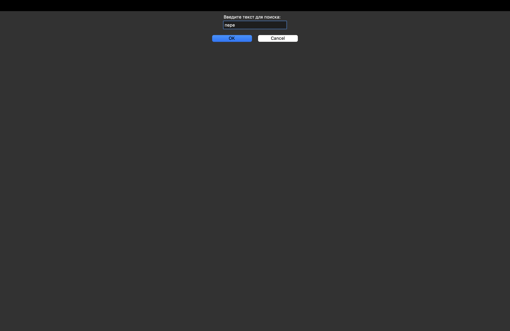

Техническое руководство: Создание текстового редактора на Python с Tkinter
Введение
Данное руководство предназначено для начинающих программистов, которые хотят создать полноценное приложение с графическим интерфейсом на Python. В результате вы получите работающий текстовый редактор с функциями: создание и редактирование текстовых файлов, открытие существующих файлов через диалоговое окно, сохранение файлов с выбором расположения, поиск текста с подсветкой всех совпадений, подсчёт слов, символов и строк в реальном времени, переключение между светлой и тёмной темой оформления, выбор шрифта, полоса прокрутки, отмена действий.

1. Исследование предметной области
1.1. Почему выбран Python и Tkinter?
Python выбран за простоту синтаксиса, отсутствие необходимости компиляции и кроссплатформенность. Tkinter выбран потому что встроен в Python, не требует дополнительной установки и предоставляет достаточный набор виджетов.
1.2. Архитектура приложения
Приложение построено по простой модульной архитектуре: главное окно (root) — контейнер для всех виджетов, текстовое поле (Text) — основная рабочая область с поддержкой undo/redo, полоса прокрутки (Scrollbar) — для навигации по длинным документам, панель кнопок (Frame) — содержит кнопки быстрого доступа, строка статуса (Label) — отображает статистику по тексту.
2. Пошаговая инструкция по созданию
Шаг 1. Импорт библиотек и создание окна
import tkinter as tk
from tkinter import filedialog, simpledialog, messagebox
root = tk.Tk()
root.title("Text Editor")
root.geometry("700x500")
Что происходит: tk.Tk() создаёт главное окно, title() задаёт заголовок, geometry() устанавливает размер.

Шаг 2. Создание текстового поля с прокруткой
text_frame = tk.Frame(root) text_frame.grid(row=0, column=0, columnspan=5, sticky="nsew") scrollbar = tk.Scrollbar(text_frame) scrollbar.pack(side=tk.RIGHT, fill=tk.Y) text = tk.Text(text_frame, yscrollcommand=scrollbar.set, undo=True) text.pack(fill=tk.BOTH, expand=True) scrollbar.config(command=text.yview) root.grid_rowconfigure(0, weight=1) root.grid_columnconfigure(0, weight=1)
Объяснение: Frame(root) создаёт контейнер, grid размещает его, sticky="nsew" позволяет растягиваться, Text(...) создаёт текстовое поле с включённой историей изменений.

Шаг 3. Функция сохранения файла
def saveas():
t = text.get("1.0", "end-1c")
savelocation = filedialog.asksaveasfilename(defaultextension=".txt", filetypes=[("Text files", "*.txt"), ("All files", "*.*")])
if savelocation:
with open(savelocation, "w", encoding="utf-8") as file1:
file1.write(t)
root.title(f"Text Editor - {savelocation}")
Что происходит: text.get("1.0", "end-1c") получает весь текст, asksaveasfilename() открывает диалог сохранения, with open(...) записывает файл.

Шаг 4. Модификация — открытие файлов
def open_file():
open_path = filedialog.askopenfilename(defaultextension=".txt", filetypes=[("Text files", "*.txt"), ("All files", "*.*")])
if open_path:
with open(open_path, "r", encoding="utf-8") as file:
content = file.read()
text.delete("1.0", tk.END)
text.insert("1.0", content)
root.title(f"Text Editor - {open_path}")

Шаг 5. Модификация — тёмная тема
dark_mode = False
def toggle_theme():
global dark_mode
dark_mode = not dark_mode
if dark_mode:
root.configure(bg="#2b2b2b")
text_frame.configure(bg="#2b2b2b")
text.configure(bg="#3c3f41", fg="#ffffff", insertbackground="white")
scrollbar.configure(bg="#4a4a4a", troughcolor="#2b2b2b")
else:
root.configure(bg="#f0f0f0")
text_frame.configure(bg="#f0f0f0")
text.configure(bg="white", fg="black", insertbackground="black")
scrollbar.configure(bg="#e0e0e0", troughcolor="#f0f0f0")

Шаг 6. Модификация — счётчик слов
def update_word_count(event=None):
content = text.get("1.0", "end-1c")
char_count = len(content)
words = content.split()
word_count = len(words)
lines = content.split("\n")
line_count = len(lines)
word_count_label.config(text=f"Слов: {word_count} | Символов: {char_count} | Строк: {line_count}")
text.bind("", update_word_count)

Шаг 7. Модификация — поиск текста с подсветкой
def search_text():
search_term = simpledialog.askstring("Поиск", "Введите текст для поиска:")
if not search_term:
return
text.tag_remove("search", "1.0", tk.END)
start_pos = "1.0"
found_count = 0
while True:
start_pos = text.search(search_term, start_pos, stopindex=tk.END)
if not start_pos:
break
end_pos = f"{start_pos}+{len(search_term)}c"
text.tag_add("search", start_pos, end_pos)
found_count += 1
start_pos = end_pos
text.tag_config("search", background="yellow", foreground="black")
if found_count > 0:
messagebox.showinfo("Результат поиска", f"Найдено {found_count} совпадений")
text.see("1.0")
else:
messagebox.showinfo("Результат поиска", "Текст не найден")

Шаг 8. Создание панели кнопок
button_frame = tk.Frame(root) button_frame.grid(row=1, column=0, columnspan=5, sticky="ew") button = tk.Button(button_frame, text="💾 Save", command=saveas, padx=10) button.pack(side=tk.LEFT, padx=2, pady=5) open_button = tk.Button(button_frame, text="📂 Open", command=open_file, padx=10) open_button.pack(side=tk.LEFT, padx=2, pady=5) clear_button = tk.Button(button_frame, text="🗑 Очистить всё", command=clear_all, padx=10) clear_button.pack(side=tk.LEFT, padx=2, pady=5) search_button = tk.Button(button_frame, text="🔍 Поиск", command=search_text, padx=10) search_button.pack(side=tk.LEFT, padx=2, pady=5) dark_button = tk.Button(button_frame, text="🌙 Dark Mode", command=toggle_theme, padx=10) dark_button.pack(side=tk.LEFT, padx=2, pady=5)

Шаг 9. Выбор шрифта
def FontHelvetica():
text.config(font=("Helvetica", 12))
def FontCourier():
text.config(font=("Courier", 12))
font = tk.Menubutton(button_frame, text="✏ Font", relief=tk.RAISED, padx=10)
font.pack(side=tk.LEFT, padx=2, pady=5)
font.menu = tk.Menu(font, tearoff=0)
font["menu"] = font.menu
helvetica = tk.IntVar()
courier = tk.IntVar()
font.menu.add_checkbutton(label="Helvetica", variable=helvetica, command=FontHelvetica)
font.menu.add_checkbutton(label="Courier", variable=courier, command=FontCourier)
Шаг 10. Строка статуса и запуск
word_count_label = tk.Label(root, text="Слов: 0 | Символов: 0 | Строк: 0", font=("Arial", 9), anchor="w")
word_count_label.grid(row=2, column=0, columnspan=5, sticky="ew", padx=5, pady=2)
text.bind("", update_word_count)
root.mainloop()
3. Список всех модификаций
- Модификация 1: Открытие файлов (функция open_file). Реализация: диалог выбора файла, чтение и вставка в текстовое поле.
- Модификация 2: Тёмная тема (функция toggle_theme). Реализация: переключение цветов всех элементов интерфейса.
- Модификация 3: Очистить всё (функция clear_all). Реализация: удаление текста с подтверждением.
- Модификация 4: Счётчик слов (функция update_word_count). Реализация: подсчёт слов, символов, строк в реальном времени.
- Модификация 5: Поиск текста (функция search_text). Реализация: поиск с подсветкой всех совпадений жёлтым цветом.
- Модификация 6: Выбор шрифта (функции FontHelvetica, FontCourier). Реализация: смена шрифта текста через выпадающее меню.
- Модификация 7: Полоса прокрутки. Реализация: навигация по длинным документам.
- Модификация 8: Отмена действий. Реализация: встроенная поддержка Ctrl+Z через параметр undo=True.
4. Системные требования и запуск
Требования: операционная система macOS, Windows или Linux, Python версии 3.6 или выше, дополнительные библиотеки не требуются.
Инструкция по запуску: сохраните код в файл text_editor.py, откройте терминал, перейдите в папку с файлом, выполните команду: python text_editor.py
5. Заключение
В результате выполнения данного руководства создан полноценный текстовый редактор с графическим интерфейсом. Реализованы: базовые операции с файлами, поддержка форматирования, поиск с подсветкой, счётчик слов, тёмная и светлая темы, удобный интерфейс с кнопками и полосой прокрутки, отмена действий.
6. Видео-презентация
Видео-презентация выполненной работы: посмотреть на YouTube